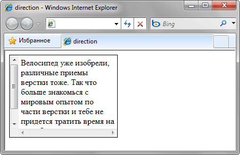
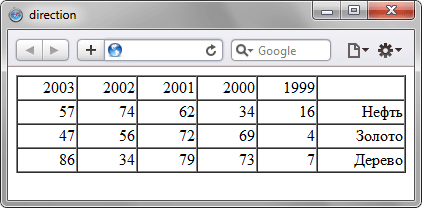

Указывает направление текста и таблиц.
Свойство применяется в основном
для языков, где текст читается
справа налево, например арабского
или иврита.
Синтаксис
direction: ltr | rtl | inherit
ltr
Текст отображается слева направо. Используется по умолчанию.
Текст отображается слева направо. Используется по умолчанию.
rtl
Текст отображается справа налево.
Текст отображается справа налево.
inherit
Наследует значение родителя.
Наследует значение родителя.
Свойство direction обычно применяется
вместе со свойством unicode-bidi,
которое определяет способ обработки
смешанного текста с разным направлением.
Пример:
<!DOCTYPE html>
<html>
<head>
<meta charset="utf-8">
<title>direction</title>
<style>
.left {
direction: ltr;
border: 1px solid #999;
padding: 10px;
margin-bottom: 10px;
}
.right {
direction: rtl;
border: 1px solid #999;
padding: 10px;
}
</style>
</head>
<body>
<div class="left">
Текст слева направо
</div>
<div class="right">
Текст справа налево
</div>
</body>
</html>
Результат применения свойства direction:

Пример 2:
<!DOCTYPE html>
<html>
<head>
<meta charset="utf-8">
<title>direction</title>
<style>
table {
border-collapse: collapse;
width: 300px;
}
td {
border: 1px solid #666;
padding: 5px;
}
.rtl {
direction: rtl;
}
</style>
</head>
<body>
<table>
<tr>
<td>Обычная таблица</td>
<td>123</td>
</tr>
</table>
<br>
<table class="rtl">
<tr>
<td>Таблица RTL</td>
<td>123</td>
</tr>
</table>
</body>
</html>
Результат второго примера:
